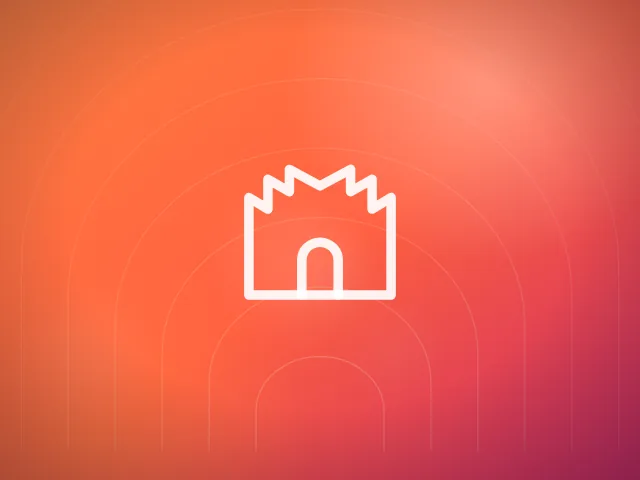

.card--interactive
Zvedne se při najetí, obrázek se lehce přiblíží.
Živý přehled. Každý prvek na této stránce je vykreslený stejným CSS jako produkční web — když se změní token, změní se i tady.
Zdroj pravdy: assets/css/tokens.css
Primitivy se nikdy nemění — mění se jen jejich sémantické přiřazení.
Proto tmavý blok stačí označit [data-theme="dark"] a vše ostatní drží.
Podpis značky. --grad-sunset je vyhrazený primární akci —
objeví se tam, kde chceme, aby uživatel klikl.
Gradientní text — .text-gradient
Outfit pro nadpisy a čísla, Inter pro text. Obě plynule škálují mezi 360 px a 1440 px, takže mezi breakpointy nikdy neskáčou.
Základ 4 px. Mezi sekcemi --section-y (72→144 px).
Štědré a měkké — tvarosloví značky je „skákavé". Ostré rohy web nepoužívá.
--r-sm · 10px
--r-md · 14px
--r-lg · 20px
--r-xl · 28px
--r-2xl · 36px
--r-pill
Stíny jsou teple tónované, nikdy neutrálně šedé — šedá působí lacině.
--sh-sm
--sh-md
--sh-lg
--sh-xl
--sh-glow-warm
--sh-glow-cool
Najeďte myší. prefers-reduced-motion přepíše všechny doby
na 1 ms — každá animace je psaná tak, že její odebrání nechá správný koncový stav.
--dur-fast · --ease-out
160 ms · expo, „Apple"
--dur-base · --ease-spring
240 ms · přestřel, hravé
--dur-slow · --ease-soft
420 ms · plynulé
Na obrazovce je vždy nejvýš jedna primární akce.
.btn--primary je vyhrazené rezervaci.
Celá karta je klikatelná, ale odkaz je jen jeden — čtečka ohlásí jeden cíl, ne pět.

Zvedne se při najetí, obrázek se lehce přiblíží.
Světlo sleduje ukazatel myši.
Inverzní karta — přerušuje dlouhé světlé úseky.
Chyba se pojmenuje česky a konkrétně — nikdy „Neplatná hodnota".
Telefon vypadá na příliš krátký.
Jeden recept, jeden token. Kde
prohlížeč backdrop-filter neumí, @supports degraduje na
neprůhledné pozadí — text nikdy nezůstane nečitelný.
.glass
Světlé sklo na barevném podkladu
.glass--dark
Tmavé sklo
.card--glass
Skleněná karta
Vlastní sada, mřížka 24 × 24, tah 1,75, zakulacené konce.
Kompletní sada je v assets/icons/sprite.svg (41 ikon).
Ikona nikdy nenese význam sama — vždy má vedle sebe text nebo
aria-label.